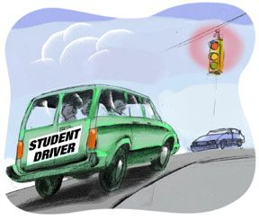

Applying synergistic solutions in an attempt to accomplish the mission and mitigate potential failures
Mission | Layers of Survivability | |
|---|---|---|
|
Safely Transport Passengers |
|

|
The Layered Approach to Survivability
The following analogies illustrate the concept of survivability.
Analogy 1: Driving
Applying multiple survivability measures (airbags, seat belts, bumpers, etc.) increases the likelihood of accomplishing the mission (safe transportation of passengers), while reducing the chance of failure. These measures are applied as a holistic system, not numerous, stand-alone pieces. For example, the airbags in a car work in conjunction with the seatbelt system. If passengers are not wearing their seatbelts and are in a serious accident, it is unlikely that they will escape uninjured solely as a result of the airbags deploying.
Analogy 2: The Village Farmer
Consider a village farmer with the mission of supplying food to a village. The farmer may have a fence around the crops to keep out deer, rabbits, and other intruders (traditional security). The farmer may have an irrigation system to be used in the event of insufficient rainfall (redundancy). He or she may plant a variety of crops so that even if environmental conditions (e.g., pests) adversely affect one crop, others will survive (diversity). All of this is well and good. But even if all the crops fail and no food is grown, the mission can still succeed if the farmer has an alternate strategy based on the mission of providing food - not necessarily growing food using the local ecosystem. If the crops fail, the farmer may turn to hunting or fishing to provide the life-sustaining mission fulfillment that fellow villagers depend upon. Is hunting a security, reliability, or fault tolerance strategy? None, because it is outside the system for growing food. This is a risk management strategy that can be formulated only with an intimate understanding of the mission that must survive. Detailed technical expertise on fence-building or even agriculture is helpful but inadequate compared to strategies based on an intimate knowledge of the mission requirements [Lipson 99].